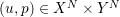
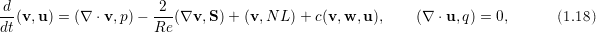
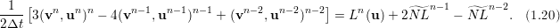
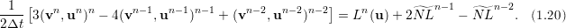
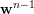
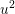

or
3.
or
3.
Each simulation is defined by three files, the .rea file, the .usr file, and the SIZE file. In addition, there is a
derived .map file that is generated from the .rea file by running genmap which will determine how the
elements will be split across processors in the case of a parallel run. SIZE controls (at compile
time) the polynomial degree used in the simulation, as well as the space dimension or
3.
The SESSION.NAME file contains the current run, it must provide the name of the .rea file and the path to it. It does not however need to correspond to an .usr file of an identical name. This allows for different test cases (.usr files) that use the same geometry and boundary conditions (.rea files).
This chapter provides an introduction to the basic files required to set up a Nek5000 simulation.
The most important interface to Nek5000 is the set of Fortran subroutines that are contained in the .usr
file. This file allows direct access to all runtime variables. Here, the user may specify spatially varying
properties (e.g., viscosity), volumetric heating sources, body forces, and so forth. One can also specify
arbitrary initial and boundary conditions through the routines useric() and userbc(). The routine
userchk() allows the user to interrogate the solution at the end of each timestep for diagnostic
purposes. The .usr files provided in the /examples/... directories illustrate several of the more
common analysis tools. For instance, there are utilities for computing the time average of  ,
, etc. so that one can analyze mean and rms distributions with the postprocessor. There
are routines for computing the vorticity or the scalar
,
, etc. so that one can analyze mean and rms distributions with the postprocessor. There
are routines for computing the vorticity or the scalar  for vortex identification, and so
forth.
for vortex identification, and so
forth.
The routine uservp specifies the variable properties of the governing equations. This routine is called once
per processor, and once per discrete point therein.
The routine userdat is called right after the geometry is loaded into NEK5000 and prior to the distribution of the GLL points. This routine is called once per processor but for all the data on that processor. At this stage the elements can be modified as long as the topology is preserved. It is also possible to alter the type of boundary condition that is initially attributed in the .rea file, as illustrated below (the array cbc(face,iel,field) contains the boundary conditions per face and field of each element). Note the spacing allocated to each BC string is of three units.
The routine usrdat2 is called after the GLL points were distributed and allows at this point only for affine transformations of the geometry.
The routine userf is called once for each point and provides the force term in Eq.??. Not that according to the dimensionalization in Eq.?? the force term  is in fact multiplied by the density .
Similarly to userf the routine userq provides the force term in Eq.1.4 and the subsequent passive scalar equations according to Eq.1.6.
The boundary conditions are assigned in userbc for both the fluid, temperature and all other scalars. An extensive list of such possible boundary conditions is available in Section. ??.
Initial conditions are attributed in useric similarly to the boundary conditions
The routine userchk is called once per processor after each timestep (and once after the initialization is finished). This is the section where the solution can be interrogated and subsequent changes can be made.
The routine usrdat3 is not widely used, however it shares the same properties with usrdat2.
Nek5000 can solve the dimensional or non-dimensional equations by setting the following parameters
| Dimensional parameters | Non-dimensional parameters |
p1= | p1=1 |
p2= | p2=1/Re (-Re) |
| p7= | p7=1 |
| p8= | p8=1/Pe (-Pe) |
alternatively the variable properties can be set in the USERVP routine.
What is a SESSION file?
To run NEK5000, each simulation must have a SESSION.NAME file. This file is read in by the code and gives the path to the relevant files describing the structure and parameters of the simulation. The SESSION.NAME file is a file that contains the name of the simulation and the full path to supporting files. For example, to run the eddy example from the repository, the SESSION.NAME file would look like:
The SIZE file defines the problem size, i.e. spatial points at which the solution is to be evaluated within each element, number of elements per processor etc. The SIZE file governs the memory allocation for most of the arrays in Nek5000, with the exception of those required by the C utilities. The primary parameters of interest in SIZE are:
 =lx1-1.
=lx1-1.
 methods) and the approximation order for the
pressure, lx2-1.
methods) and the approximation order for the
pressure, lx2-1.
The total size of the problem is lx1*ly1*lz1*lelt.
Per-processor memory requirements for Nek5000 scale roughly as 400 8-byte words per allocated gridpoint.
The number of allocated gridpoints per processor is  =lx1*ly1*lz1*lelt. (For 3D,
lz1=ly1=lx1; for 2D, lz1=1, ly1=lx1.) If required for a particular simulation, more memory
may be made available by using additional processors. For example, suppose one needed to
run a simulation with 6000 elements of order . To leading order, the total memory
requirements would be
=lx1*ly1*lz1*lelt. (For 3D,
lz1=ly1=lx1; for 2D, lz1=1, ly1=lx1.) If required for a particular simulation, more memory
may be made available by using additional processors. For example, suppose one needed to
run a simulation with 6000 elements of order . To leading order, the total memory
requirements would be  points 400 (wds/pt)
points 400 (wds/pt)  8 bytes/wd = 6000
= 19.2 GB. Assuming there is 400 MB of memory per core available to the user (after
accounting for OS requirements), then one could run this simulation with MB
MB/proc) processors. To do so, it would be necessary to set lelt 6000/48 =
125.
8 bytes/wd = 6000
= 19.2 GB. Assuming there is 400 MB of memory per core available to the user (after
accounting for OS requirements), then one could run this simulation with MB
MB/proc) processors. To do so, it would be necessary to set lelt 6000/48 =
125.
We note two other parameters of interest in the parallel context:
There is a slight memory penalty associated with these variables, so one generally does not want to have them excessively large. It is common, however, to have lp be as large as anticipated for a given case so that the executable can be run without recompiling on any admissible number of processors (, where is the value computed above).
The .rea file consists of several sections:
 coefficients.
coefficients.
This part is to be read by PRENEK and provides the origin of the system of coordinates XZERO;YZERO as well as the size of the cartesian units XFAC;YFAC. This one line has no impact on the mesh as being read in NEK.
The header of the mesh data may have the following representation
The header states first how many elements are available in total (), what dimension is the the problem (here three dimensional), and how many elements are in the flow mesh ().
 | 0.000000E+00 | 0.171820E+00 | 0.146403E+00 | 0.000000E+00 |
 | 0.190000E+00 | 0.168202E+00 | 0.343640E+00 | 0.380000E+00 |
 | 0.000000E+00 | 0.000000E+00 | 0.000000E+00 | 0.000000E+00 |
 | ||||
| 0.000000E+00 | 0.171820E+00 | 0.146403E+00 | 0.000000E+00 | |
| 0.190000E+00 | 0.168202E+00 | 0.343640E+00 | 0.380000E+00 | |
| 0.250000E+00 | 0.250000E+00 | 0.250000E+00 | 0.250000E+00 |
The section header may look like this
640 Curved sides follow IEDGE,IEL,CURVE(I),I=1,5, CCURVE
and the data is stored as follows
| IEDGE | IEL | CURVE(12,1,IEL) | CURVE(12,2..5,IEL) | CCURVE(12,IEL) |
| 3 | 1 | 1.0000 | 0.0000 | C |
| 7 | 1 | 1.0000 | 0.0000 | C |
The array CCURVE (char curve) holds a character denoting the type of curved boundary, while the array CURVE holds the actual information about the curved boundary. There are up to five available components in the CURVE array in case more information is needed by other implementations, that do not represent the default. We may have
Both ’C’ and ’S’ types allow for a surface of as high order as the polynomial used in the spectral method, since they have an underlying analytical description, any circle arc can be fully determined by the radius and end points. However for the ’M’ curved element descriptor the surface can be reconstructed only up to second order. This can be later updated to match the high-order polynomial after the GLL points have been distributed across the boundaries. In .usrdat2 the user can move the geometry to match the intended surface, followed by a call to the subroutine ’fixgeom’ which can realign the point distribution in the interior of the element.
The section header may look like this
***** FLUID BOUNDARY CONDITIONS *****
and the data is stored as follows
| CBC | IEL | IEDGE | CONN-IEL | CONN-IEDGE | redundant |
| E | 1 | 1 | 4.00000 | 3.00000 | 0.00000 |
| .. | .. | .. | .. | .. | .. |
| W | 5 | 3 | 0.00000 | 0.00000 | 0.00000 |
| .. | .. | .. | .. | .. | .. |
| P | 5 | 5 | 149.000 | 6.00000 | 0.00000 |
Here, one can specify a file to use as an initial condition. The initial condition need not be of the same polynomial order as the current simulation. One can also specify that, for example, the velocity is to come from one file and the temperature from another. The initial time is taken from the last specified restart file, but this can be overridden.
The following section defines history points in the .rea file, see example vortex/r1854a.rea, or shear4/shear4.rea
The "56 POINTS" line needs to be followed by 56 lines of the type shown. However, in each of the following lines, which have the UVWP etc., location is CRUCIAL, it must be layed out exactly as indicated above1, it is therefore advisable to refer to the examples vortex, shear4. If you want to pick points close to the center of element 1 and are running with lx1=10, say, you might choose UVWP H 5 5 5 1. 2
The UVWP tells the code to write the 3 velocity components and pressure to the .sch file at each timestep (or, more precisely, whenever mod(istep,iohis)=0, where iohis=param(52)). Note that if you have more than one history point then they are written sequentially at each timestep. Thus 10 steps in the first example with param(52)=2 would write (10/2)*56 = 280 lines to the .sch file, with 4 entries per line. The "H" indicates that the entry corresponds to a requested history point. A note of caution: if the ijk values (5 5 5 in the preceding example line) exceed lx1,ly1,lz1 of your SIZE file, then they are truncated to that value. For example, if lx1=10 for the data at the top (31 31 31) then the code will use ijk of (10 10 10), plus the given element number, in identifying the history point. It is often useful to set ijk to large values (i.e., > lx1) because the endpoints of the spectral element mesh are invariant when lx1 is changed.
It is important to note that Nek5000 currently supports two input file formats, ascii and binary. The .rea
file format described above is ascii. For the binary format, all sections of the .rea file having storage
requirements that scale with number of elements (i.e., geometry, curvature, and boundary conditions)
are moved to a second, .re2, file and written in binary. The remaining sections continue to
reside in the .rea file. The distinction between the ascii and binary formats is indicated in
the .rea file by having a negative number of elements. There are converters, reatore2 and
re2torea, in the Nek5000 tools directory to change between formats. The binary file format is the
default and important for I/O performance when the number of elements is large (  100000,
say).
100000,
say).
Nek5000 was designed with two principal performance criteria in mind, namely, single-node performance and parallel performance.
A key precept in obtaining good single node performance was to use, wherever possible, unit-stride memory addressing, which is realized by using contiguously declared arrays and then accessing the data in the correct order. Data locality is thus central to good serial performance. To ensure that this performance is not compromised in parallel, the parallel message-passing data model is used, in which each processor has its own local (private) address space. Parallel data, therefore, is laid out just as in the serial case, save that there are multiple copies of the arrays—one per processor, each containing different data. Unlike the shared memory model, this distributed memory model makes data locality transparent and thus simplifies the task of analyzing and optimizing parallel performance.
Some fundamentals of Nek5000’s internal data layout are given below.
i=1,...,nx1 (nx1 = lx1)
j=1,...,ny1 (ny1 = lx1)
k=1,...,nz1 (nz1 = lx1 or 1, according to ndim=3 or 2)
e=1,...,nelv, where nelv lelv, and lelv is the upper bound on number of elements, per processor.
which is equivalent but superior (WHY?) to:
which is equivalent but vastly superior (WHY?) to:
means different things on different processors and nelv may differ from one processor to the next. (By at most 1, WHY ?)
where n:=nx1*ny1*nz1*nelv. Notable exceptions are in places where performance is critical, e.g., in the middle of certain iterative solvers.